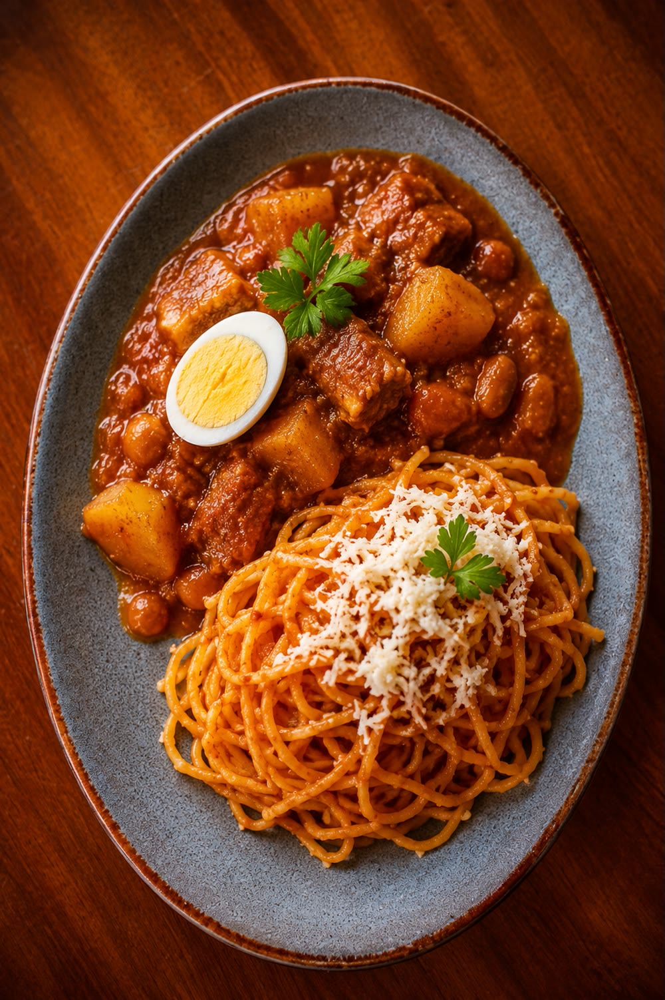
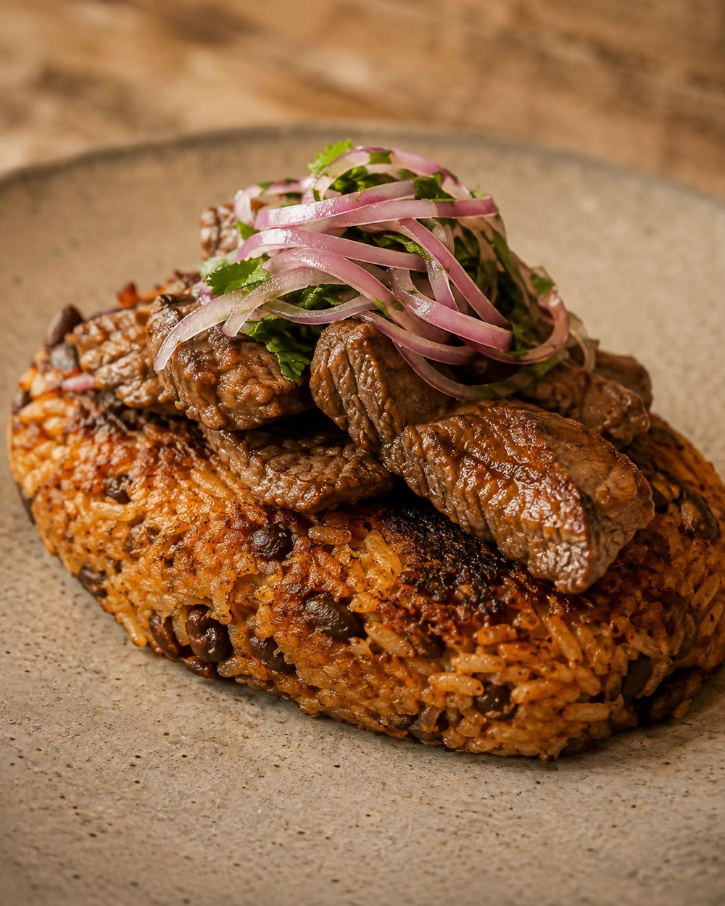
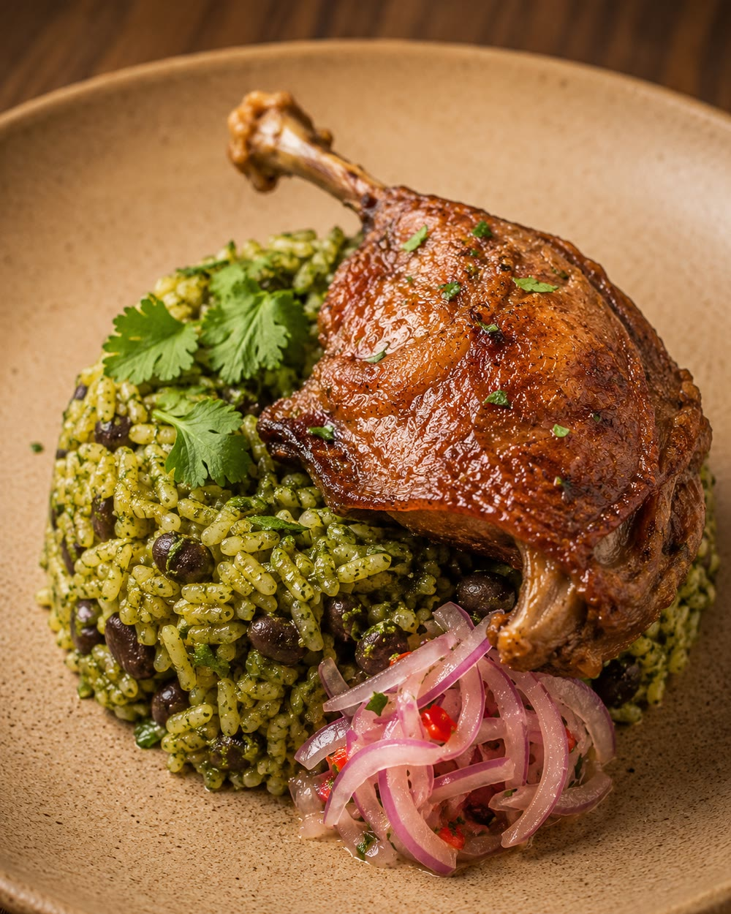
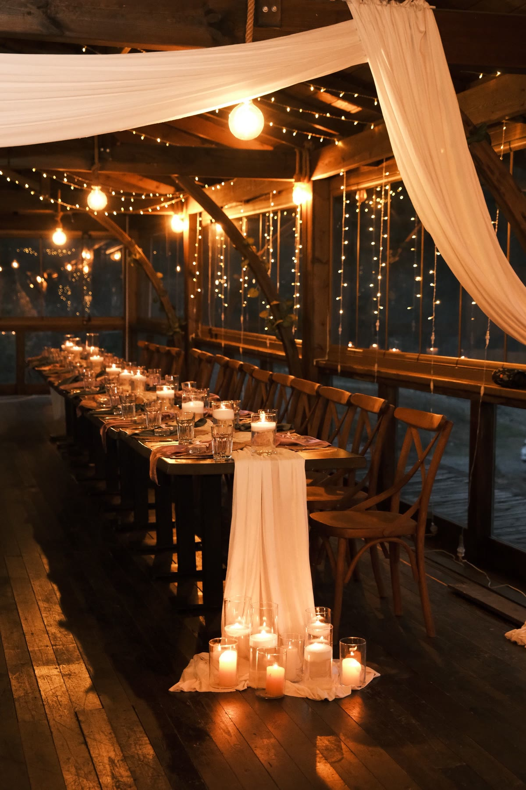
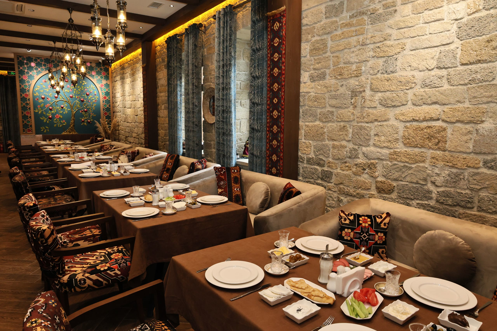

Carapulcra con sopa seca
S/ 32El clásico del sur chico: papa seca guisada con cerdo, maní y ají panca, junto a tallarines en aderezo de albahaca.
Restaurante criollo
Cocina criolla con sabor a casa: sabores que se cocinan sin prisa, con cucharón de palo y olla de barro.
Nuestra historia
La carta
Nuestros clásicos de siempre, preparados cada día con insumos frescos del mercado y recetas que pasaron de generación en generación.

El clásico del sur chico: papa seca guisada con cerdo, maní y ají panca, junto a tallarines en aderezo de albahaca.

Gallina deshilachada en crema de ají amarillo y pecanas, con papa amarilla, huevo, aceituna de botija y arroz.

Lomo fino al wok con cebolla, tomate y ají amarillo, flambeado al sillao. Con papas fritas y arroz graneado.

Cabrito tierno guisado en culantro y chicha de jora, con frejoles canarios y arroz blanco.

Frejoles y arroz dorados a la sartén, con lomo saltado jugoso, huevo frito y plátano.

Masa de papa amarilla con limón y ají, rellena de pollo, palta y mayonesa casera.

Arroz verde al culantro y cerveza negra, con pierna de pato confitada y sarsa criolla.

Picarones con miel de chancaca y suspiro a la limeña con merengue al oporto.
Recetas de siempre
Cada receta de nuestra carta guarda años de tradición: aderezos que se hacen a mano, guisos que se respetan en su tiempo y el cariño de la cocina familiar peruana. Ya sea tu primera visita o tu almuerzo de cada domingo, aquí siempre hay un plato que sabe a casa.
Reservar una mesa
De nuestra barra
El Perú es tierra de pisco. Acompaña tu almuerzo con un buen chilcano, una chicha morada de la casa o una copa de vino nacional.
Pisco quebranta, limón, jarabe, clara de huevo y amargo de angostura.
Pisco acholado, ginger ale, limón y maracuyá fresco.
Pisco, jarabe de algarrobina, leche evaporada, yema y un toque de canela.
Nuestro pisco sour con aguaymanto fresco: dulce, ácido y muy peruano.
Pisco y vermouth rojo, bien frío y con cáscara de naranja. Un clásico de antaño.
Selección de bodegas peruanas. Pregunta por la recomendación del día.
Rubia, roja o negra de cervecerías locales. Pregunta por la de temporada.
Maíz morado, piña, manzana y canela. Jarra disponible.
Limón, hierbabuena y hielo frappé. Ideal para el verano limeño.
Celebraciones
Cumpleaños, almuerzos de empresa o la reunión familiar del domingo: preparamos tu celebración con menús a medida y la atención de siempre.

Mesas para grupos grandes y fuentes para compartir, al centro, como manda la tradición.

Reserva el salón para cumpleaños, bautizos o celebraciones de empresa con menú especial.

Tus platos favoritos listos para recoger o llevar a casa. Haz tu pedido por WhatsApp.

Todo empezó en la cocina de la abuela: una olla de barro, un cucharón de palo y la puerta siempre abierta para quien llegara con hambre. Sazón Peruana nace de esa costumbre: cocinar sin prisa, servir con cariño y lograr que cada almuerzo se sienta como volver a casa.
Reseñas de muestra — se reemplazarán por reseñas reales del restaurante
La carapulcra con sopa seca está igualita a la de mi abuela. Atención muy cálida y el local precioso.
Fuimos en familia un domingo y salimos felices. El seco de cabrito y el pisco sour, de lo mejor de Lima.
Comida criolla de verdad, porciones generosas y un ambiente muy bonito. Volveremos en nuestro próximo viaje.
El ají de gallina, espectacular. Se nota que todo es hecho en casa. Muy recomendado para almorzar.
Reservas
Completa tus datos y te confirmamos por WhatsApp. Para grupos de más de 10 personas escríbenos directamente.
Horario
Martes a domingo
12:00 — 17:00
Lunes cerrado